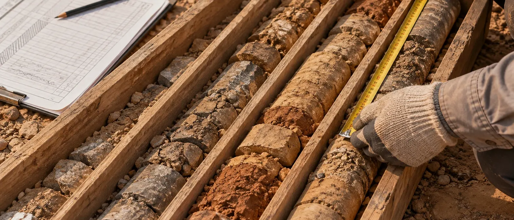

What Should a Geotechnical Investigation Include?
Boreholes, in-situ tests, sampling and laboratory work: what a well-scoped investigation covers, and how to size it for the structure you plan to build.
By the PETALS engineering team
Technically reviewed by [Reviewer name]

Why the investigation comes first
Every foundation is a bet on the ground beneath it. A geotechnical investigation replaces that bet with evidence: what the soil and rock are, how strong they are, where the water sits, and how the ground will respond once a structure is built on it.
Skipping or shrinking the investigation rarely saves money. Foundations designed on assumed values tend to be either oversized, which wastes concrete and steel, or undersized, which shows up years later as cracks and settlement. The investigation is usually a small share of the project cost, and it sets the size of the most expensive element below ground.
Desk study and site walkover
A good investigation starts before any rig arrives. The engineer reviews the structure’s layout and loads, existing geological maps, old investigation reports for nearby plots, and any history of filling, quarrying or flooding on the site.
A walkover then checks what the documents cannot: access for the rig, signs of fill, nearby structures that show distress, cuttings that expose the strata, and the level of water in nearby wells.
Boreholes and trial pits
Boreholes are the backbone of the investigation. Their number and depth follow from the structure: a heavier or wider building needs more boreholes, and they must go deep enough to pass through every layer that the foundation loads will reach.
Trial pits complement boreholes near the surface. They are cheap, let the engineer see the soil in place, and are ideal for checking fill thickness and shallow foundation levels.
Filled-up soil, 0–1.5 m. Brick bats, debris and loose sand from earlier site work. Not a founding layer: foundations are taken through it.
Silty sand, 1.5–6 m. Medium dense, brown, fine grained. N values rise with depth. Suitable for lightly loaded shallow foundations above the water table.
Clayey sand, dense, 6–10.5 m. Dense to very dense, with kankar nodules. Undisturbed samples taken here for shear strength and consolidation tests.
Weathered rock, 10.5–13 m. Highly to moderately weathered, recovered as fragments. SPT refusal marks the change from soil to rock.
Rock, 13–15 m. Moderately weathered quartzite. Cored, with core recovery and RQD logged run by run.
The number of boreholes is not a budget line to trim. It is the resolution at which you see the ground.
Tests in the ground
Some properties are best measured where the soil sits, before sampling disturbs it. The common in-situ tests answer different questions:
| Test | What it measures | Typically used for |
|---|---|---|
| Standard Penetration Test (SPT) | Resistance to a driven sampler, as an N value | Density of sands, consistency of clays, bearing capacity |
| Cone Penetration Test (CPT) | Continuous cone and sleeve resistance | Detailed soil profile in soft to medium soils |
| Dynamic Cone Penetration Test | Blows per depth of a driven cone | Quick checks between boreholes, fill thickness |
| Plate Load Test | Settlement under a loaded plate | Bearing capacity and settlement of shallow foundations |
| Field Vane Shear Test | Undrained shear strength | Soft clays |
Sampling and the laboratory
Samples carry the site to the laboratory. Disturbed samples are enough to classify a soil: grain size, Atterberg limits, moisture content. Strength and compressibility need undisturbed samples, taken in thin-walled tubes and sealed so they keep their natural moisture.
In rock, cores are logged for recovery and Rock Quality Designation (RQD), then tested for compressive strength. The laboratory programme should be planned with the design in mind, so that every test answers a question the designer will ask.
Groundwater
Groundwater changes almost every geotechnical answer. It reduces bearing capacity, drives uplift on basements, makes excavations unstable and can attack concrete. The investigation should record the level in each borehole, ideally after it has had time to settle, and note the season, since levels in Rajasthan can swing widely between summer and monsoon.
What the report should give you
The report is the only part of the investigation most of the project team will ever see. Use this list to check one you have received.
Report checklist
0 of 7
Key takeaways
- Size the investigation to the structure, not to a fixed budget.
- Boreholes must pass every layer the foundation loads will reach.
- Combine in-situ tests with laboratory tests on undisturbed samples.
- Record groundwater, and the season it was measured in.
- Expect clear recommendations, not only data.